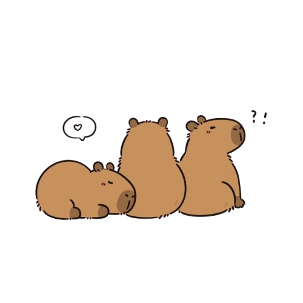

As capybaras are currently trending as anik-anik among Gen Zs, along with the popularity of keychain accessories displayed in physical shops
such as Mr. DIY, this inspired the creation of a website dedicated solely to capybara-themed keychains. Capy-Series focuses on accessories designed
for collectors and individuals who enjoy using anik-anik as part of their daily aesthetic, especially for decorating bags.
Disclaimer. This website is created for academic purposes only, in fulfillment of the midterm project
for the Human-Computer Interaction (HCI) subject. All images used are credited to their rightful owners and
were sourced from PINTEREST.
